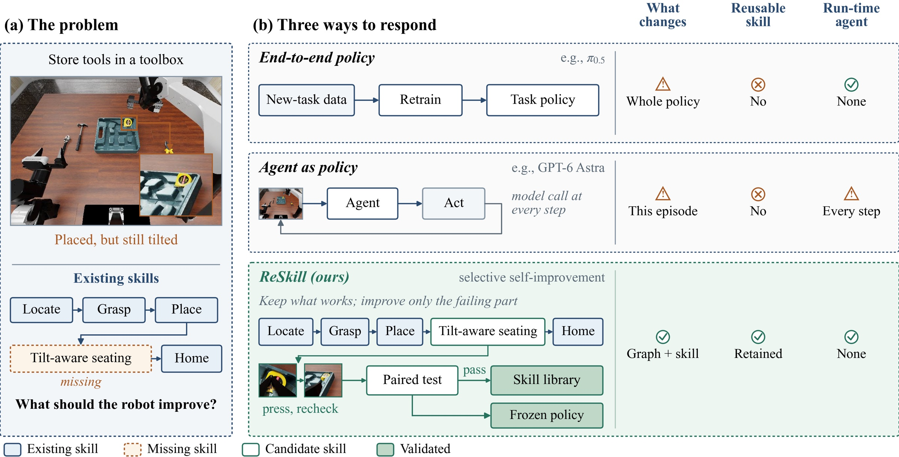
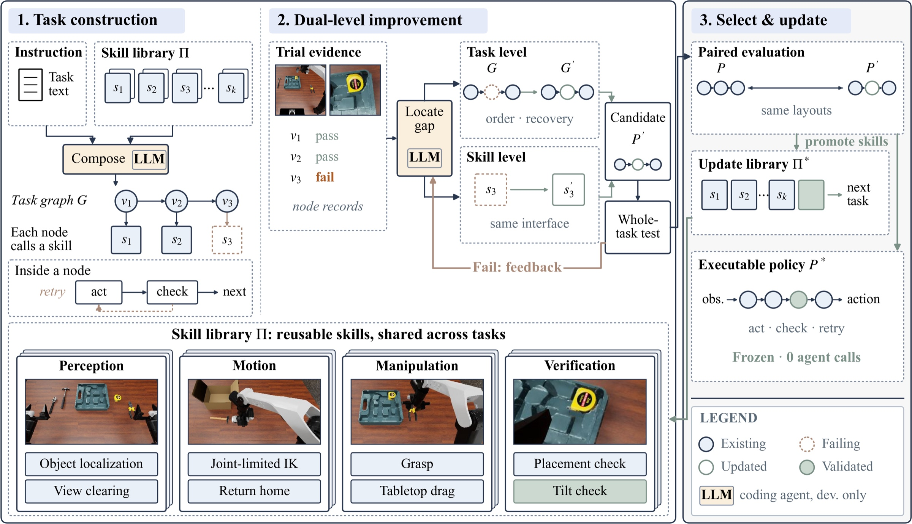
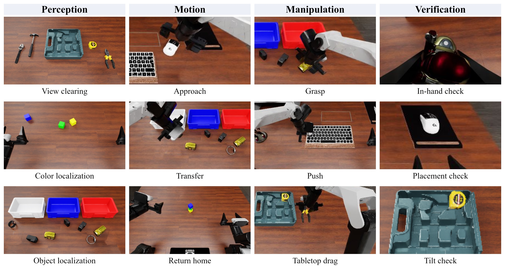
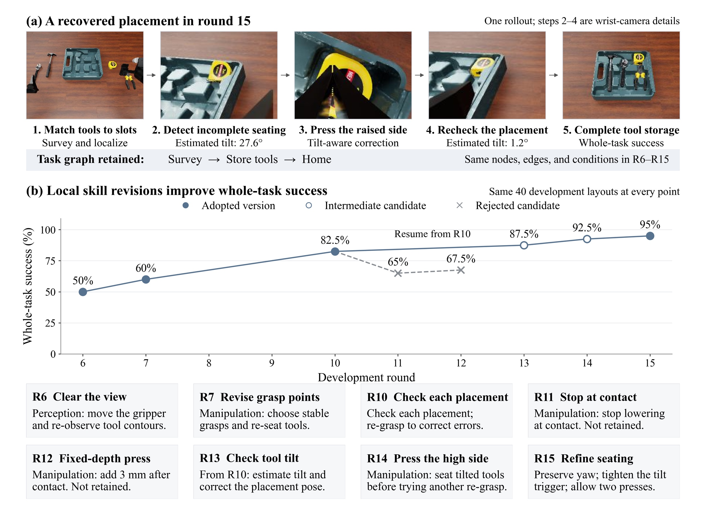
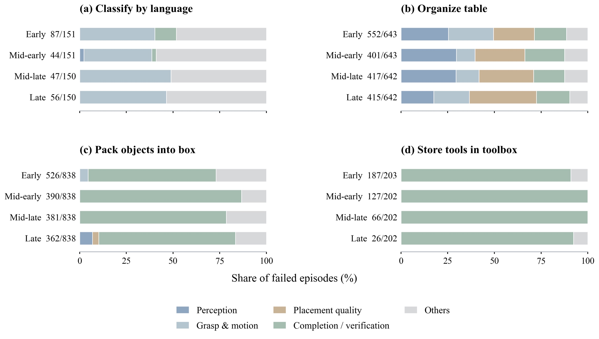
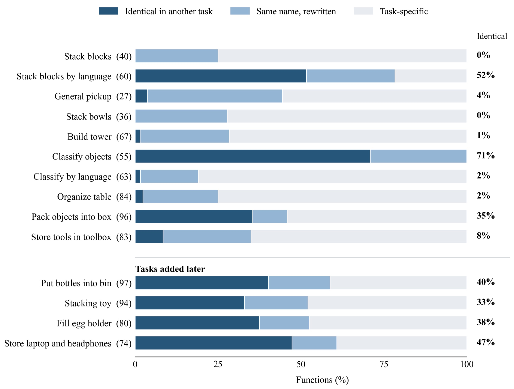

The idea
A new task often fails at only a few stages. ReSkill finds those stages, revises the task graph or the skill behind them, keeps a change only after it wins a whole-task comparison, and adds the improved skill to a library that later tasks reuse.

Abstract
Self-improvement on compositional manipulation tasks requires deciding what to reuse, where to improve, and which changes to retain. We present ReSkill, a selective self-improvement framework that concentrates revision on capability gaps. A coding agent constructs an object-centric task graph from an instruction and a skill library, then uses node-level execution records to locate failures. At the task level, it revises stage organization, hand-off conditions, and recovery routes; at the skill level, it strengthens perception, motion, manipulation, and verification capabilities that repeatedly fail. Candidate revisions undergo full-task evaluation and paired comparisons before adoption, allowing local changes to accumulate into validated skills and an independently executable policy. The agent participates only during development; the deployed policy calls the retained skills without invoking the agent at run time. On the same development set, average success across ten RoboDojo tasks rises from 30.0% for the initial versions to 86.2% for the final adopted programs; retained programs achieve 83.6% in recorded robustness and model-selection evaluations. Across eight real-world tasks, ReSkill succeeds in 72 of 80 rebuilt-simulation trials and 62 of 80 real-robot trials (77.5%). The median revision changes only three functions, approximately 0.5% of a program, while 39% of task-specific functions in later-added tasks directly reuse existing implementations.
Method
A coding agent edits the program during development. The deployed program is frozen and runs as ordinary code.

From the instruction and the skill library, the agent composes an object-centric task graph. Each node calls a skill and runs an act–check–retry loop.
Trial runs record each node's status, cause, and visual evidence. The agent follows the graph to the earliest node that went wrong.
Task level: stages, hand-offs, recovery routes. Skill level: a new implementation of the failing skill behind the same interface.
A candidate is screened, evaluated on the whole task and on robustness layouts, then compared with the incumbent on the same test layouts.
Validated skills enter the library. The next task starts from the task with the closest skill needs, not from scratch.

Case study
Tool storage, same layout, two versions of the program. The earlier version places the tape measure, finds it tilted, and re-grasps it, but the tool lands tilted again and the episode runs out of steps. The round-15 version estimates the tilt, presses the raised side, rechecks, and stores all four tools. Execution traces, one frame every ten control steps.

RoboDojo
Bimanual ARX X5 in Isaac Sim. The controller sees only camera images, calibration, joint states, the robot model, and the instruction. Success is the benchmark's own criterion.
One successful episode per task, recorded by the benchmark head camera, from the retained program reported in the table; seed 1, evaluation layouts 10–54. Pills: playback speed and the program’s recorded successes. Click a video to enlarge it.
Mean of the ten per-task success rates. Retained programs: recorded robustness and model-selection evaluations (seed 1, layouts 10–54), which include episodes used to select them. Initial graphs: development set. †Public RoboDojo report under its own inputs and protocol; shown for scale only, not a matched comparison.
| Task | Initial (%) | Successes | Success (%) | Median steps / limit | Astra† (%) | π0.5† (%) |
|---|---|---|---|---|---|---|
| Stack blocks | 25.0 | 31/32 | 96.9 | 178/550 | 86.0 | 6.7 |
| Stack blocks by language | 25.0 | 27/27 | 100.0 | 202/400 | 40.0 | 0.0 |
| General pickup | 100.0 | 51/57 | 89.5 | 57/200 | 84.0 | 12.0 |
| Stack bowls | 37.5 | 21/22 | 95.5 | 248/800 | 62.0 | 38.0 |
| Build tower | 37.5 | 37/37 | 100.0 | 722/1050 | 2.0 | 24.0 |
| Classify objects | 50.0 | 22/25 | 88.0 | 542/1100 | 56.0 | 12.7 |
| Classify objects by language | 12.5 | 20/27 | 74.1 | 829/1100 | 30.0 | 0.0 |
| Organize table | 0.0 | 15/36 | 41.7 | 1000/1000 | 0.0 | 0.0 |
| Pack objects into box | 12.5 | 17/27 | 63.0 | 973/1300 | 0.0 | 2.7 |
| Store tools in toolbox | 0.0 | 41/47 | 87.2 | 566/900 | 0.0 | 0.0 |
| Average | 30.0 | 282/337 | 83.6 | – | 36.0 | 9.6 |
Real robot
For each task, one teleoperated demonstration is used to rebuild the scene in MuJoCo. The program is developed in the rebuilt scene and then run on the real robot, frozen, with no agent calls. This real-to-sim step only supplies a development environment; it is not part of ReSkill.
Frozen ReSkill programs on the real robot, sped up as noted. These clips include multi-object variants; the scored task variants are listed in the table below. Click a video to enlarge it.
Left half: the teleoperated demonstration. Right half: the same motion replayed with torque control in the MuJoCo reconstruction. Some demonstrations handle more objects than the scored single-object variant.
| Apple to bowl | Red cup to box | Black spoon to plate | Cup nesting | Drawer | Block to bowl | Bimanual sorting | Sweep | Total | |
|---|---|---|---|---|---|---|---|---|---|
| Rebuilt simulation | 10/10 | 10/10 | 10/10 | 10/10 | 10/10 | 10/10 | 7/10 | 5/10 | 72/80 |
| Real robot | 9/10 | 9/10 | 8/10 | 8/10 | 9/10 | 9/10 | 6/10 | 4/10 | 62/80 |
Of the 18 real-robot failures, 6 began in perception, 8 in local interaction, and 4 at stage hand-offs.
Analysis
Measured over 774 revisions and more than ten thousand verified simulation episodes.
| Change type | Revisions | Median functions changed | Compared | Improved | Mean Δ success (pp) | Share of total gain |
|---|---|---|---|---|---|---|
| Skill level | 303 | 2 | 119 | 58 | +2.8 | 36% |
| Task level | 47 | 1 | 22 | 11 | +3.3 | 4% |
| Both levels | 299 | 5 | 113 | 56 | +5.6 | 48% |
| Parameters only | 125 | 0 | 63 | 25 | +1.2 | 12% |
| Total | 774 | 3 | 317 | 150 | +3.5 | 100% |


Once a task graph settles into a few coarse nodes, improvement moves inside them. Revisions that change both a node and its skills bring 48% of the total gain; skill-only revisions bring 36%.
On build tower and object classification, reading one demonstration brought the first success after 0.7 and 1.5 h instead of 3.6 h. The best model-selection results with and without it differ by one layout.
Long multi-object tasks (table organization 41.7%, box packing 63.0%) and tight-fit insertion with no reusable ancestor skill remain hard for rule-based skills.
Citation
@article{sun2026reskill,
title = {ReSkill: Selective Self-Improvement for Robot Manipulation},
author = {Sun, Zheng and Li, Zhihao and Li, Zhuo and Liu, Wenrui and Wang, Xin and Chen, Fei},
journal = {arXiv preprint arXiv:2611.10510},
year = {2026}
}